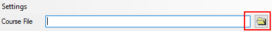
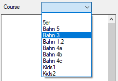
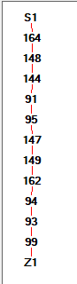
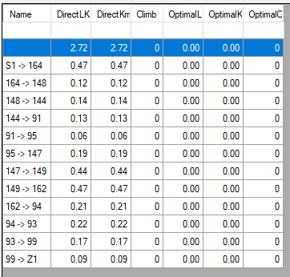
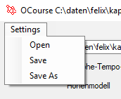
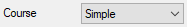
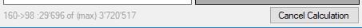
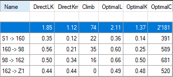
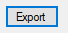
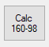

Quick start
1. Open OCourse.exe
2. Select a OCAD Course Setting file by typing the file name or using browser

3. Select a course

The selected course is analysed and displayed in two ways: In a display and as a table


Remark: If height model or velocity model is not defined, columns # 2, 4, 5, 6, 7 are filled by default values.
Column descriptions see section table.
The top row in the table shows the sum of all the sections.
Define a Model
A model is defined by a course file and a calculation model.
The settings of such a model can be saved and loaded as a settings-file.

Calculate a course
When a model is completely defined and a specific course

is selected, OCourse shows the course in the section display, starts the calculation of the optimal routes, displays the progress in the status bar

and adds completed routes continously to the section table.
Section Table
After the course is calculated, the section table is filled with a lot of relevant information. See course help for the purposes of special rows.

| Name |
Name of the section (From Control -> To Control), variation or summary |
| DirectLKm |
Leistungs-Km along the direct lines (=DirectKm + 10 * Climb) |
| DirectKm |
Distance in km along the direct lines |
| Climb |
Climb along the optimal route calculated by the calculation model |
| OptimalLkm |
(Distance + 10 * Climb) in km along the optimal route |
| OptimalKm |
Distance in km along the optimal route |
| OptimalCost |
Cost along the optimal route |
The calculated routes can be saved as shape file by
. The name of the exported shape file is included in the current model (must be saved)
and the routes are reloaded when loading the specific settings.
By this, the calculation must only be done once.
Remark: the calculated routes are specific for height model,
velocity model, resolution and steps.
If any parameter of these change, the routes are dismissed calculated again when needed.
Custom calculations
When 2 controls are selected in the section display,
additional calculations for this section can be performed after clicking
